Design Work
Selected student projects
20 selected projects
CAMPAIGN II
Social Media Campaign II
AMDE 477 · Interactive & Social Media
CAMPAIGN
Social Media Campaign
AMDE 477 · Interactive & Social Media
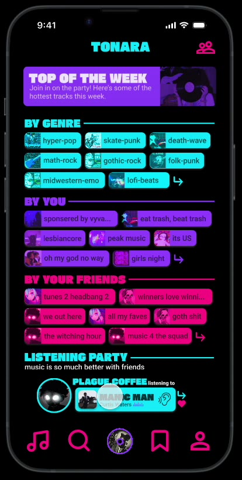
Tonara
AMDE 445 — UI/UX Design · UI/UX Design / Video Prototype
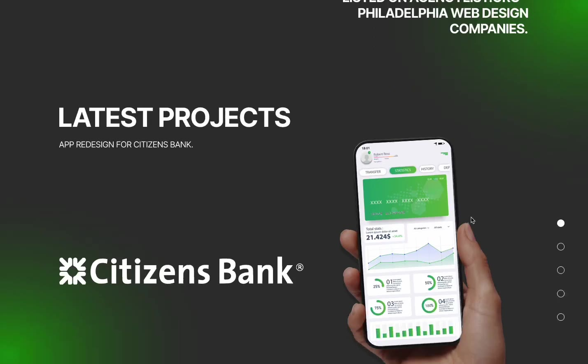
Agency
AMDE 445 — UI/UX Design · Motion Design
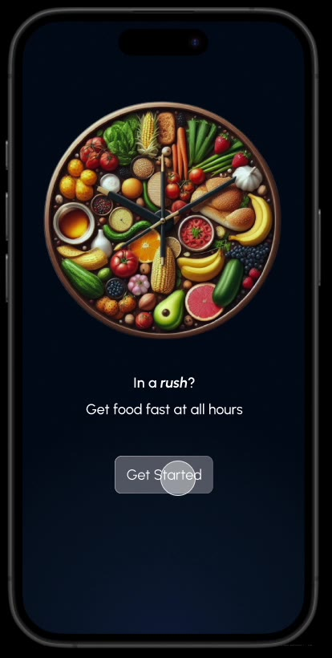
Rush
AMDE 445 — UI/UX Design · Motion Design
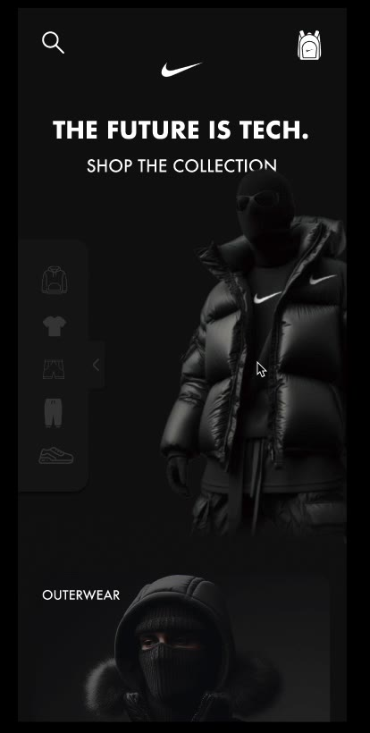
Nike
AMDE 445 — UI/UX Design · Motion Design
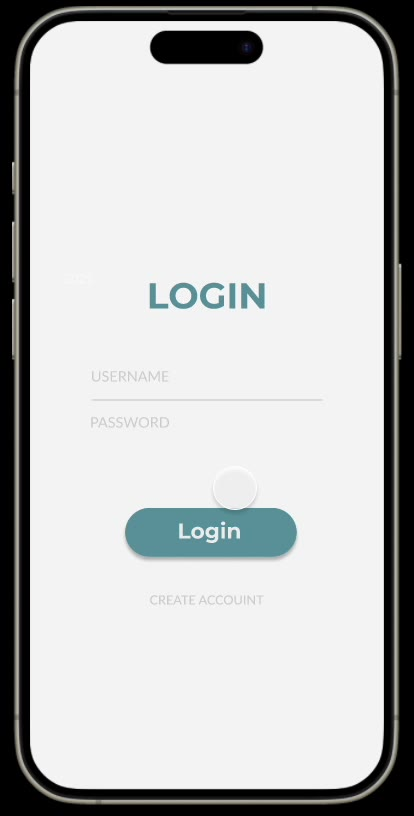
Kayak
AMDE 445 — UI/UX Design · Motion Design
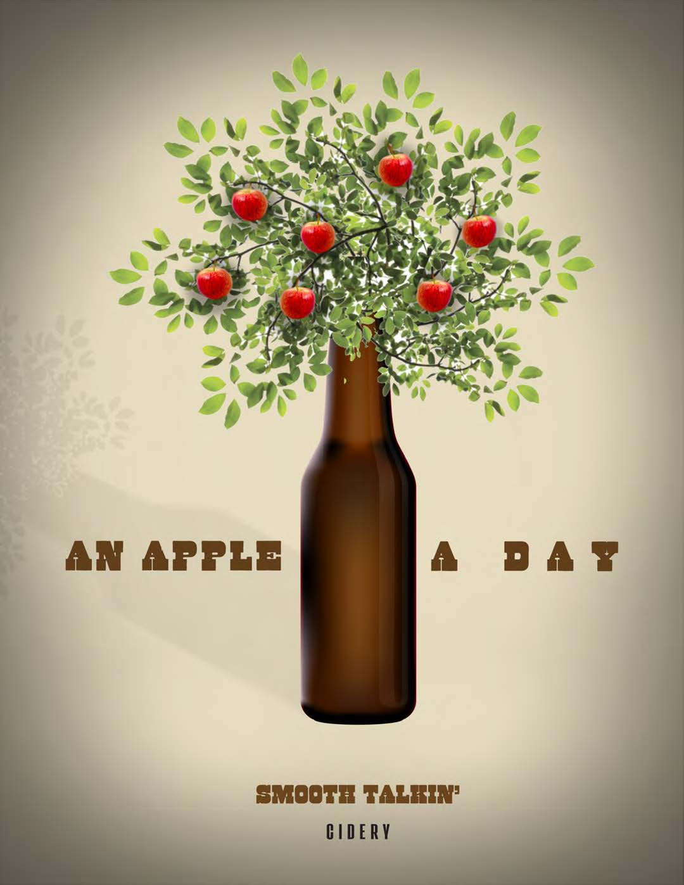
An Apple a Day
AMDE 375 — Imaging Technology · Digital Imaging
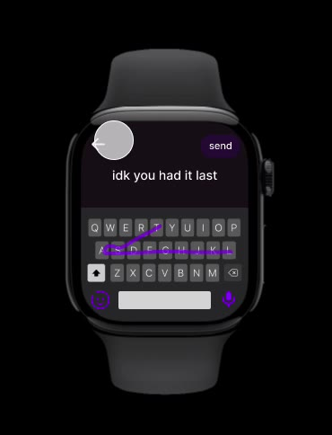
Smartwatch Prototype
AMDE 445 — UI/UX Design · UI/UX Design / Video Prototype
I Want You Out
AMDE 350 — Social Design Studio · Social Design / Poster Design
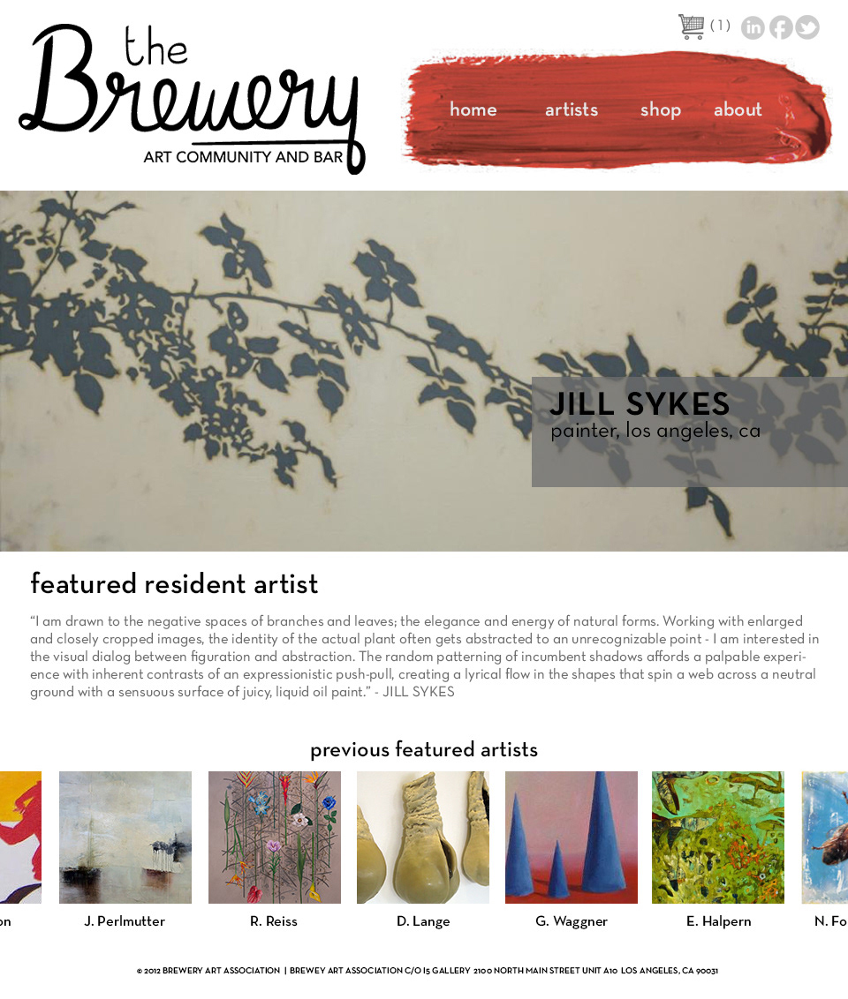
The Brewery
AMDE 155 — Introduction to Web Design · Web Design
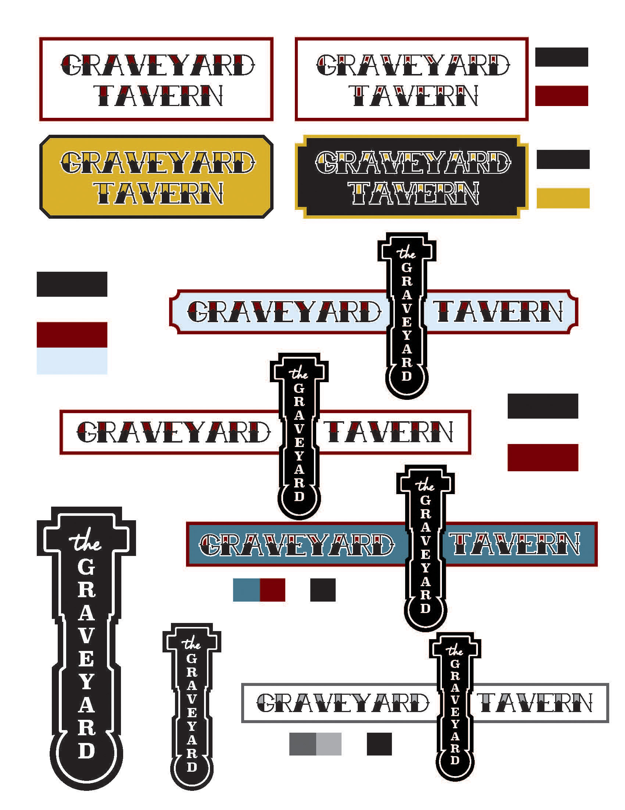
Graveyard Tavern
AMDE 375 — Imaging Technology · Branding / Visual Identity
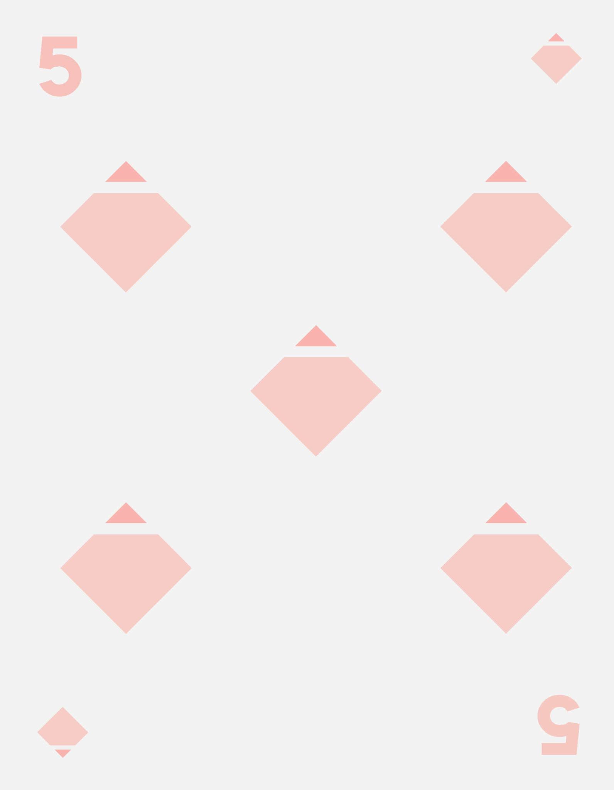
Geometric Playing Cards
Course to confirm · Illustration · Graphic Design
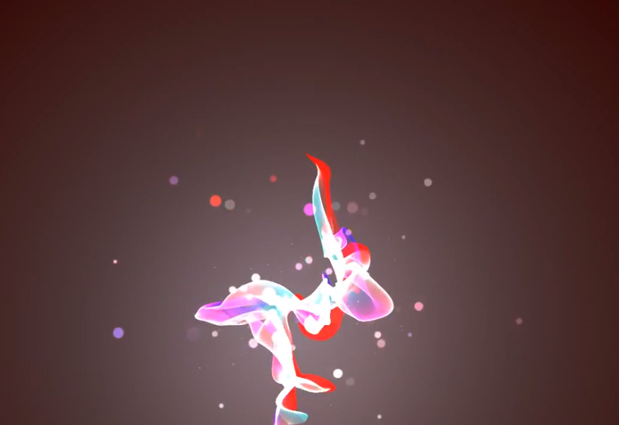
Motion Study
AMDE 445 — UI/UX Design · Motion Design
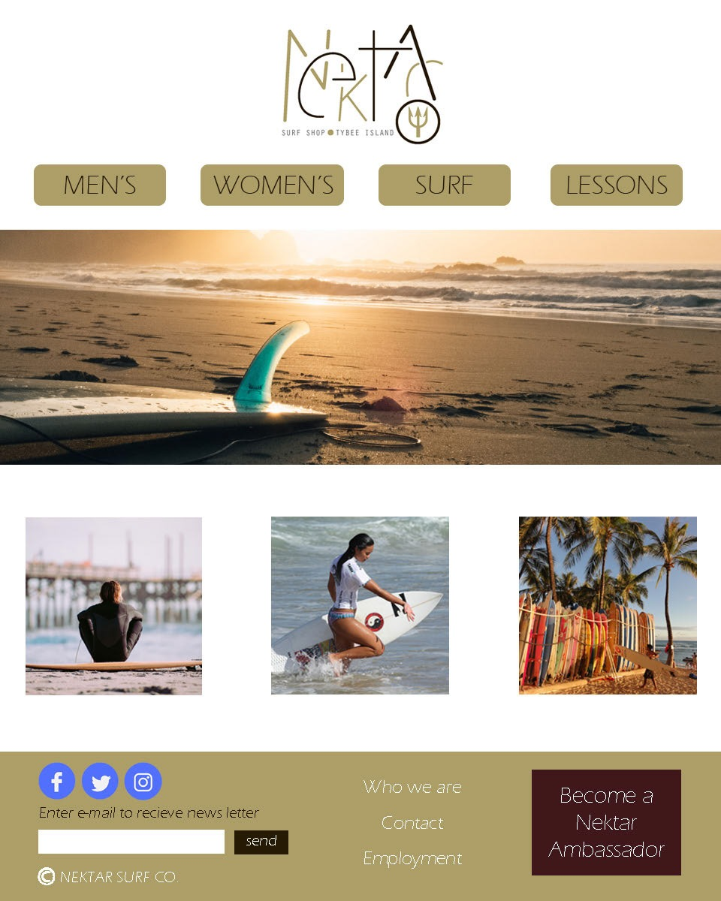
Nektar Surf Co.
AMDE 155 — Introduction to Web Design · Web Design
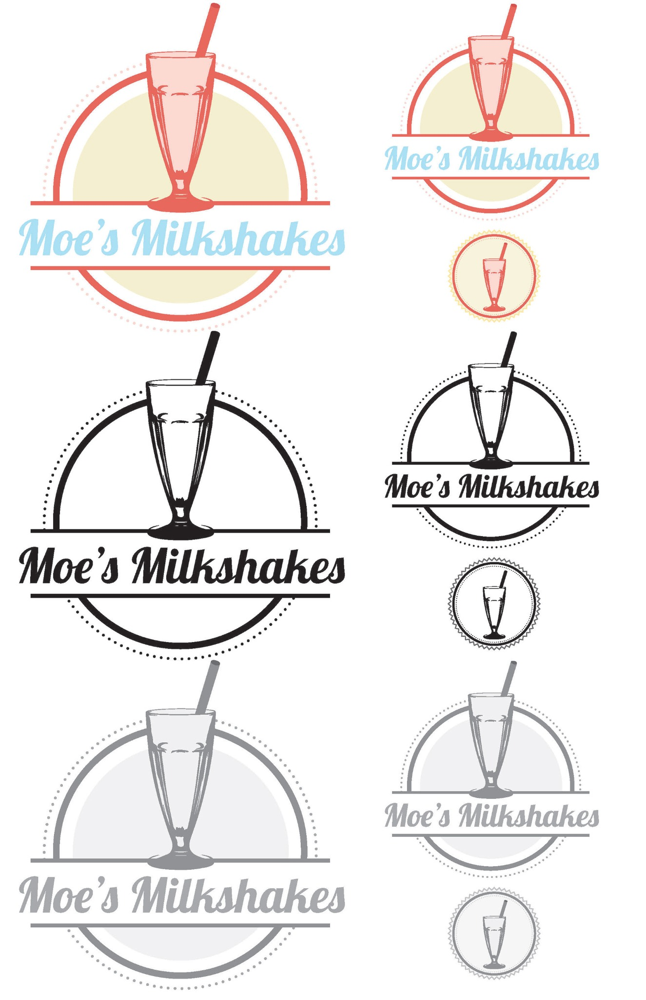
Moe’s Milkshakes
AMDE 375 — Imaging Technology · Branding

Quit — Anti-Smoking Poster
AMDE 350 — Social Design Studio · Social Design / Poster Design

Encyclopedia of Ocean Life
Course to confirm · Print Design · Editorial Layout

Playing Cards
Course to confirm · Illustration · Design
Crispbee Logo Design
Course to confirm · Identity Design